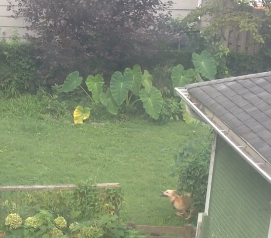
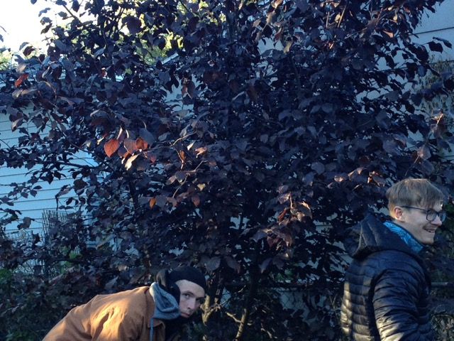
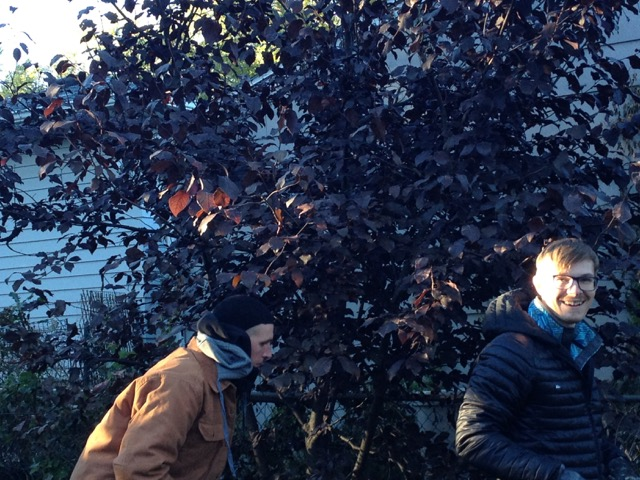
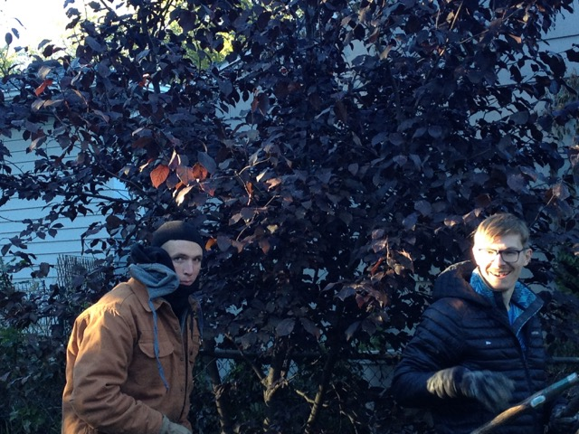

Sam had a fascination with plants and landscapes. I remember him talking about wanting to become a landscape architect back in middle school and early high school. He would have become a very successful landscape architect had he pursued that career. Composing plants and the spaces they occupy was therapeutic for Sam. The plants always responded well to Sam's touch. He had a green thumb, no doubt about that. Sam would research how to care for his plants to the most minute detail. What's the pH of the soil? Was the plant getting enough light? Too much light? Should this be pruned? It all mattered to him. Not only would he have made a great landscape architect, he could've become a great botanist.
Last spring, Sam planted three Colocasia Gigantea, or giant elephant ear, bulbs in our back yard. He planted them on the north end of the yard by some brush so as to maximize the high sun exposure. It was the perfect spot for those bad boys. I wasn't there for when Sam planted them but I do remember going out in the back yard with him and appreciating how massive the elephant ears were. He loved saying the scientific name and would correct me if I called them "elephant ears". That was one of his favorite jokes, correcting mispronunciation or vocabulary, which sometimes drove me crazy but most of the time I thought it was pretty funny. Sam had a very goofy sense of humor which I will write about another time. Anyways, Sam's elephant ears grew to be probably 3ft tall and 2 or 3ft wide. They were big.

Later that year in the fall on October 21st around 6pm Sam and I dug up the elephant ears to overwinter the bulbs. It was a particularly cold fall day so of course Sam wore his balaclava, heavy duty wolverine boots, Patagonia base layer, and carhartt jacket. Sam took a lot of pride in his gear. He was also known to really bundle up even when it wasn't that cold... I think he just liked gearing up.
The sun was getting low and shining it's warm, golden light on us as we began to dig up the elephant ears. Sam was the boss of this operation and told me what to do. He told me that we needed to dig a circle around the base of the elephant ears so as to not damage the roots. There were three bulbs we needed to extract so there was plenty of work ahead of us. We had two shovels; one had a pointed blade, the other was square. The soil was dry and hard which made digging difficult. I took the square bladed shovel and Sam took the pointed one. We started digging around the first elephant ear bulb.



Dad came out with Luna. He was bundled up and sitting in one of the two garden chairs we had in the back yard. He had his camera and snap a couple pictures of me and Sam. I really like these pictures. Sam was caught off guard in the first picture. Dad snuck up behind us and probably said something like "Hey boys, smile for the camera", or "Don't mind me, just documenting this excavation", or some quip to make us smile. By the third picture you can see Sam giving the camera a little smirk. He was happy in that moment. Happy to be outside with his brother, Dad, and dog digging up three plants he cared so much about.
Sam was an efficient digger. He was working as a groundskeeper at the country club just a few blocks away and previously worked for a landscaping company; he knew how to work the ground. Before we started digging we had to chop off the leaves of the elephant ears. Sam got some new lopers for my parents for Christmas which we used to cut the leaves. Once all the leaves were remove we started digging. As mentioned earlier, we needed to dig a circle around the base of the elephant ear. We started digging about 1 foot away from the base. We could already see some of the roots at that distance. "It's okay to chop some of the roots off", he told me, "we just need to make sure it still has some intact at the end". That was good to hear because I was not the most careful worker and accidentally severed some of the roots. We were working up a sweat. Digging that cold soil was hard work. We dug deeper and closer to the base. Almost there! We exposed the bulb and most of the rooting system on the first elephant ear. Sam carefully cut some of the remaining stubborn roots that were clinging to the cold soil. The first elephant ear was free! We put it in a felt planter bag filled with soil. This is where we would keep the elephant ears over the winter.
We took a break, played with Luna, then went inside to grab a beer and maybe some food. The house was warm. Mom came down to talk to us. We gave her an update on the first elephant ear then went back out. Dad was still outside playing with Luna and enjoying the remaining sun.